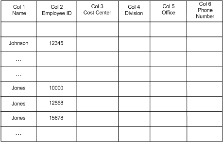

Applies to: Windows | Windows Server
An index is created over data in the table with JetCreateIndex or multiple indexes may be created simultaneously with JetCreateIndex2 using the JET_INDEXCREATE structure. The index is defined in terms of an array of columns, in precedence order. This array of columns is also called the index key. The index key may be defined as the primary index when the JET_bitIndexPrimary option is set in the grbit parameter of JetCreateIndex or JET_INDEXCREATE. The index key is a null terminated string of null terminated tokens as shown in the following example:
+Col1\0-Col2\0+Col3\0\0
The key in the example may be used to create an index over three columns in the table. Each column specified in the index is referred to as the "index segment" or "key column". The index segment may be either ascending or descending in terms of its ordering contribution. In the example above, the name of the first column in the index is Col1. The + indicates that Col1 is indexed in ascending order. The – before Col2 indicates that it is indexed in descending order.
When conditional columns are present in the index, the JET_CONDITIONALCOLUMN structure is used to indicate how they are indexed. A conditional column may be used to control the presence or absence of an index entry in an index based on the value in the corresponding conditional column without affecting the sort order of the index. A conditional column may include or exclude an index entry from the index if the value of that conditional column is NULL for the corresponding record.
By default, the maximum size of the index key is given by the JET_cbKeyMost constant which has always been 255 bytes of normalized data (bytes of data including the indexing overhead). Starting with Windows Vista, the maximum size of the index key can be set with the JET_INDEXCREATE structure. The maximum size of the index key corresponds to the database page size. To enable a custom maximum key size, specify the Jet_bitIndexKeyMost option in the grbits member of JET_INDEXCREATE, and set the cbKeyMost member to one of the following values:
JET_cbKeyMost2KBytePage: When the database page size is 2048 bytes, the maximum index key size can be between 255 bytes minimum, and 500 bytes maximum.
JET_cbKeyMost4KBytePage: When the database page size is 4096 bytes, the maximum index key size can be between 255 bytes minimum, and 1000 bytes maximum.
JET_cbKeyMost8KBytePage: When the database page size is 8196 bytes, the maximum index key size can be between 255 bytes minimum, and 2000 bytes maximum.
The example in the diagram below shows a table containing employee information. The table has 6 columns, each defining a specific employee attribute. A record in the table contains values for an employee, such as the employee name in column 1 and employee ID in column 2. A primary index created for this table organizes the data according to the employee name first, and the employee ID second. Both name and ID are indexed in ascending order. For example, a record containing the name Johnson and employee ID 12345 will be listed before of a record with an employee name Jones and an ID of 10000. All the records for Jones are stored together in the table, with their employee IDs in ascending order as shown in the table.

The key in the primary index must be unique, but the keys in the secondary index can be duplicates. For example, if an index is created over last name, and there are two people with Stevens in the database, ESE returns a Jet_errKeyDuplicate error from JetUpdate or JetUpdate2, when the application attempts to insert the second "Stevens". When the actual key is larger than the maximum key size, the key is truncated. Key truncation effects searching and uniqueness and should be managed by the application. For example, if "Stevens" and "Stevenson" were stored in an index over last name and the max key size were too small to store the "on" portion of "Stevenson" then key truncation would result in the database engine declaring that "Stevens" and "Stevenson" are duplicates even though they are not. The application must be prepared to handle cases like this during search and update if the index definition and the column values it indexes are such that key truncation is a possibility. Starting in Windows Vista, applications can specify the Jet_bitIndexDisallowTruncation option in JET_INDEXCREATE or JetMakeKey. Specifying this flag will cause any update to the index that would result in a truncated key to fail with JET_errKeyTruncated. Otherwise, keys will be silently truncated. This will allow the application to function without concern for the artifacts caused by key truncation that were previously described.